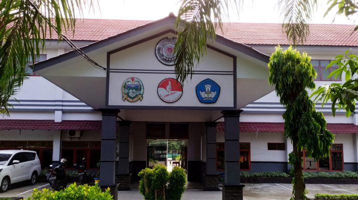

SMKN 9 Medan

SSMKN 9 Medan adalah sekolah menengah kejuruan (SMK) negeri di Kota Medan.Tentang keterangan SMKN 9 Medan, informasi yang tersedia sangat terbatas. Namun, kita dapat menemukan beberapa informasi tentang SMK di wilayah lainnya. Contohnya, SMKN 1 Bulukumba di Banda Aceh telah melakukan implementasi manajemen sarana dan prasarana dalam meningkatkan prestasi Untuk mendapatkan informasi lebih spesifik tentang SMKN 9 Medan, Anda dapat mencoba menghubungi sekolah langsung atau mencari informasi di situs web resmi atau sosial media sekolah.